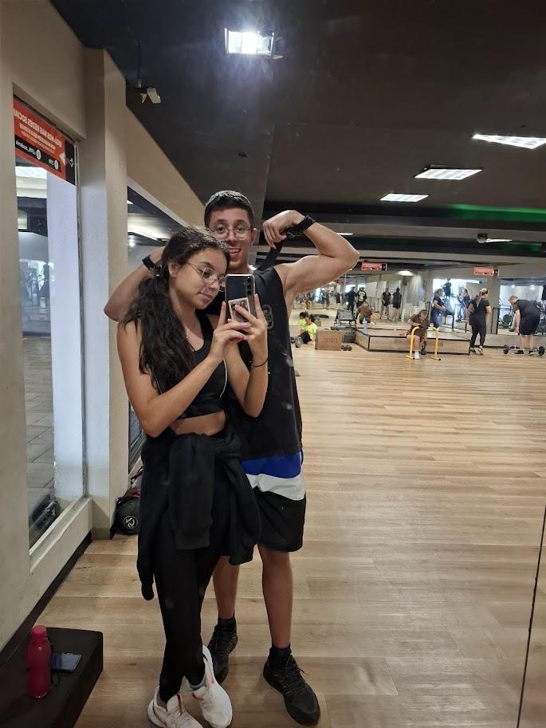
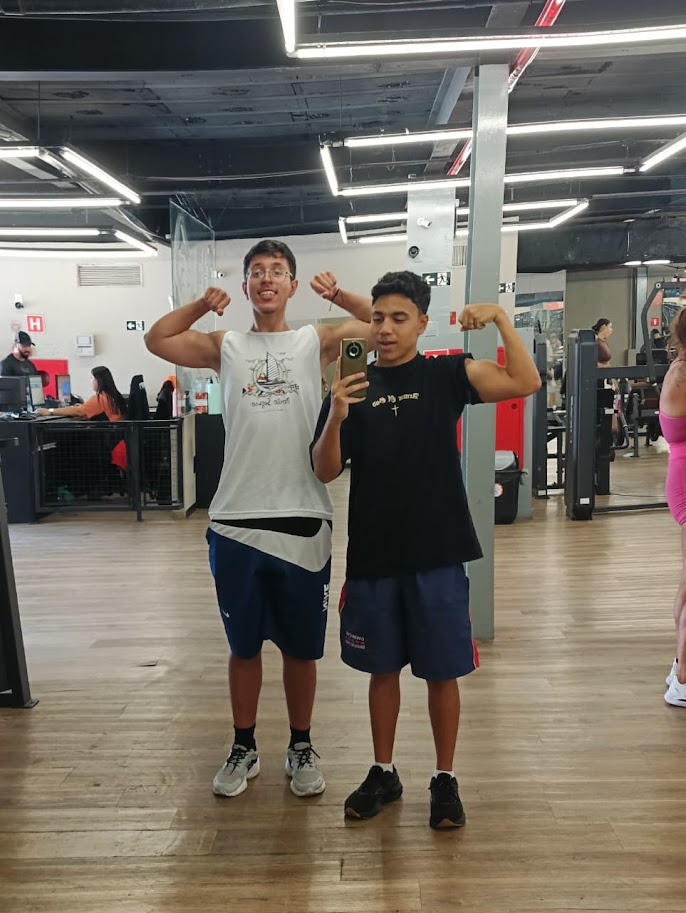
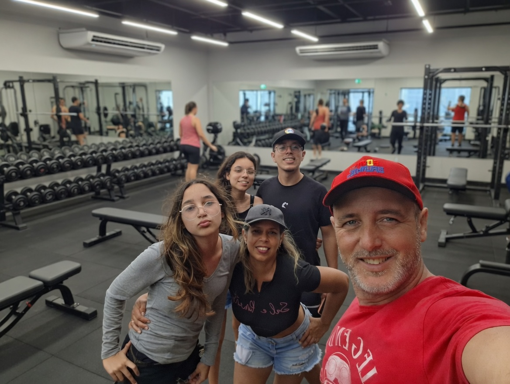

Por que a academia se tornou meu
refúgio
Depois de horas intermináveis de estudo, descobri que academia não é só sobre fitness. É sobre saúde mental, conexão familiar e encontrar equilíbrio em meio ao caos.
Sobre a GymSafe
Se você abriu o feed hoje, provavelmente viu dezenas de dietas malucas, treinos impossíveis e uma pressão gigante para ter uma rotina "perfeita". Mas a gente precisa te contar um segredo: ser saudável não precisa ser um sacrifício.
O GymSafe é um projeto individual que está sendo desenvolvido na SPTech com uma missão bem clara:
O Verdadeiro Equilíbrio
Cuidar do corpo e da mente não significa abrir mão das coisas que te fazem feliz. O segredo é dosar!
Hábitos Reais, Zero Paranoia
Esqueça as cobranças impossíveis. Nosso foco é te ajudar a construir uma rotina leve e possível de manter.
Saúde para a Vida Toda
Crie um estilo de vida que faça sentido para a sua realidade, com resultados sustentáveis e sem sacrifícios extremos.
Evolução Sem Pressão
Cada passo conta. A jornada para o bem-estar não é uma corrida de velocidade, mas sim uma construção diária no seu próprio ritmo.
Quem Sou
Olá! Meu nome é Gabriel Galhiardo Farina e sou estudante de CCO na SPTech.
A ideia do GymSafe nasceu da minha própria rotina. Entre horas intermináveis de estudo, códigos e a correria do dia a dia, percebi que precisava de uma válvula de escape. Foi aí que a academia entrou na minha vida não como uma cobrança estética, mas como um verdadeiro refúgio.
Por que escolhi esse tema?
Porque reparei o quanto as redes sociais vendem uma rotina fitness irreal, focada em dietas extremas e treinos exaustivos. Eu quis usar esse projeto para mostrar o outro lado da moeda: treinar é sobre saúde mental, conexão e encontrar equilíbrio no meio do caos.
O GymSafe é a minha forma de unir a paixão pela tecnologia com o bem-estar, provando que uma vida saudável deve ser leve, real e sem paranoias.
A academia nos conecta
A academia não é só um lugar para cuidar do corpo, mas também um espaço de conexão.



Meu pai costumava trabalhar até tarde. Minha mãe estava sempre ocupada. Eu estava sempre estudando. A academia se tornou o único lugar onde conversamos de verdade, não sobre contas ou notas, mas sobre nós.